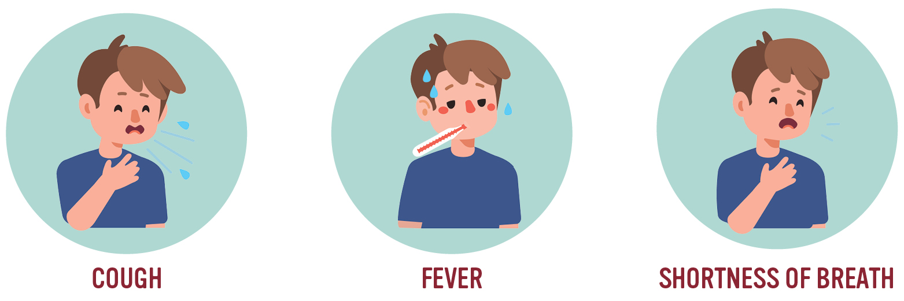

The begining of COVID-19
Coronaviruses a family of viruses that can cause illnesses such as the common cold,
(SARS) and (MERS). In 2019, a new coronavirus was identified as the cause of a disease outbreak
that originated in China. In March 2020, the World Health Organization (WHO) declared the
COVID-19 outbreak a pandemic.The virus which causes coronavirus disease is called severe acute
respiratory syndrome coronavirus 2 (SARS-CoV-2).
Causes
It's unclear exactly how contagious the new coronavirus is
- Coronaviruses transmit from one to another in lose contact with infected person (within about 6 feet, or 2 meters).
- Respiratory droplets released by infected person coughs, sneezes or talks.
- from the surfaces with viruses in and then touch your eyes, nose or mouth.
- Recent travelling from or to an area ongoing community spread of COVID-19 as reported by WHO.
- the contact between a person who cares about infected people, like doctors or nurses, increases the probability to be infected.
- Smokers ,diabetes , heart disease and lung disease patients are more at risk for the serious form of COVID-19.
Symptoms

The illness is ranged from mild symptoms to severe illness and death for
confirmed coronavirus. These symptoms may appear 2-14 days after exposure
Fever
Cough
Shortness of breath
Emergency warning signs include
Trouble breathing
Persistent pain or pressure in the chest
New confusion or inability to arouse
Bluish lips or face
Complications
Acute Respiratory Failure
You find difficulties in the breathe ,your lungs might not pump
enough oxygen into your blood or might not take enough carbon
dioxide out.
Pneumonia
The air sacs in your lungs become inflamed, making it harder to
breathe. The Oxygen cannot transfer to your blood.
Good news
If you have COVID-19, the illness that comes from infection with the
recently discovered coronavirus, your symptoms may be relatively
mild and manageable at home. That’s true for most people